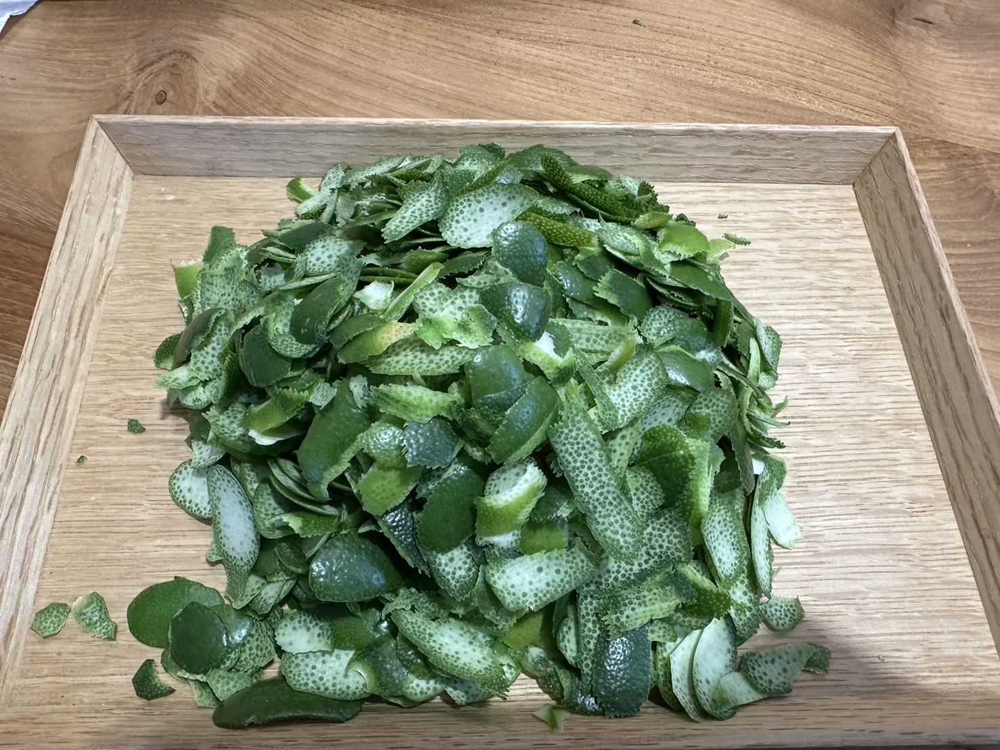

假日的午後，我做了一件不一樣的事——手作一批檸檬糖漿，配一壺檸檬特調飲。
削檸檬皮的時候，刀鋒才劃過表皮，香氣已經整個撲出來了。不用等，不用搓，就那一下，整個空間都是檸檬味。
這個畫面讓我想到精油側寫裡，很少被單獨拿出來談的一個部位——果皮。它對應的課題是「結果」，而它會呈現兩種完全不同的樣子。
果皮，在精油側寫裡代表什麼？
果皮是果實的外衣，在柑橘家族裡最具代表性——檸檬、甜橙、佛手柑、葡萄柚都是。它富含精油囊泡，氣味鮮明濃郁，這層香氣不只是裝飾，而是植物刻意散發出去的訊號。

在側寫裡，果皮這個部位有兩種樣貌，代表精油相同，方向卻幾乎相反：
負向（失衡）：太在意結果
很在乎結果、勝負心強、計較得失勝負；執著於成果，好像沒有一個「好的結局」，一切就沒有意義。這種太執著於成果、耿耿於懷的狀態，久了容易讓心情往下掉，變得低沉、提不起勁，也常反映在消化系統上——心因性的腸胃問題、食慾不振。
正向（平衡）：豐盛的邀請
果皮的香氣，並不是被逼出來的，而是植物自己主動散發出去的「邀請訊號」——為的是吸引動物靠近、幫忙把種子帶到更遠的地方。這個狀態，是充盈的、飽滿的、主動吸引的，允許別人靠近，也允許自己對事情懷抱期待，是一種陽光、相信好結果會發生的狀態。
如果你正走在「負向」這一端
如果你發現自己最近比較容易對很多事情耿耿於懷，很在意有沒有做到、有沒有得到理想的結果，甚至因此有點憤憤不平——這時候，很適合借助果皮類的精油，把自己慢慢帶回比較輕盈、陽光的那一端：
🍋 檸檬——想太多、陷入兩難時，幫你看見不同的路
🍊 甜橙——太在乎結果時，提醒自己也可以享受過程
🌿 佛手柑——原地打轉時，幫你踏出不完美的第一步
🍈 葡萄柚——理想很大行動很小時，幫你安穩落地
這類精油多以「冷壓法」萃取，不像很多精油需要高溫蒸餾——因為香氣早就準備好放在表層了，只需要輕輕一壓，去收集它，不需要用力逼問。（佛手柑含光敏性成分，塗抹後需避光。）
精油，其實比你想的更生活化
我把削下來的檸檬皮，直接把上面那層香氣萃出來，跟糖漿融合在一起——沒有等待，因為那份香氣一直都在，只是需要被承接。
這杯特調裡，我還加了一點玫瑰果醬。玫瑰能帶來自信、幫助人多愛自己一點——如果那天心情不太好，一杯加了玫瑰的檸檬特調，也可以是一種小小的自我陪伴。
你不需要把精油想像得很遙遠、很有儀式感才能開始。有時候，只是一杯手作飲品裡的一片檸檬皮，就已經是生活化的芳療練習。
常見問題 FAQ
是同一個象徵系統。精油側寫服務中若抽到果皮類精油（檸檬、甜橙、佛手柑、葡萄柚等），側寫師會依個案當下的狀態，判斷落在「執著結果」的負向，還是「豐盛邀請」的正向，並依此進行整合解析。這篇文章談的是這套象徵背後的邏輯，讓你先有一個初步的理解。
可以從最簡單的嗅吸開始：滴一滴檸檬或甜橙精油在手心搓開、靠近鼻子深呼吸，或加進擴香儀。佛手柑因為含光敏性成分，白天使用建議避免直接塗抹在會曬到太陽的皮膚上。
可以預約「精油側寫」，透過靜心冥想與盲抽三支精油，看見當下情緒的位置、走過的歷程，以及深層的根源，比單篇文章的自我閱讀更完整、更貼近你個人的狀態。
本文為精油生活化知識分享，非醫療診斷或治療建議。
如果你也想更完整地看懂自己此刻的狀態
🌿 30 分鐘線上諮詢 NT$600，預約實體療程可全額折抵
📍 實體服務地點：台灣桃園
🔗 查看完整服務項目
📩 預約與詢問：私訊 Facebook 粉專，或加入官方 LINE：@864ihpsq